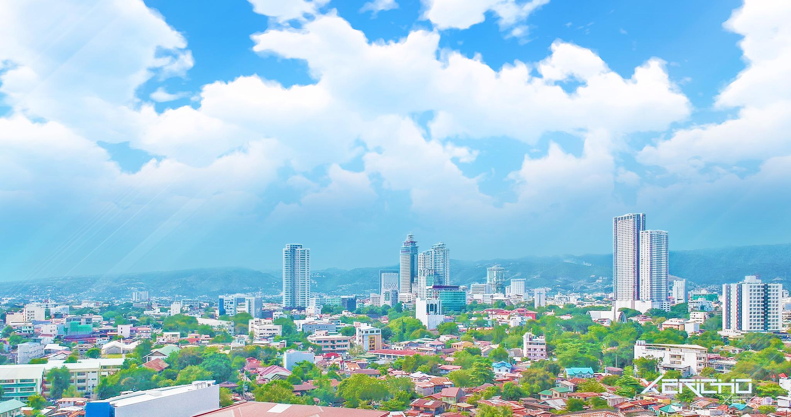

Cebu
Go back

Cebu City, officially the City of Cebu (Cebuano: Dakbayan sa Sugbo; Filipino: Lungsod ng Cebu),
is a 1st class highly urbanized city in the Central Visayas region of the Philippines. It is the
capital of the Cebu Province, where it is geographically located but is one of three cities (together
with Lapu-Lapu City and Mandaue City) that are administratively independent of the provincial
government. According to the 2020 census, it has a population of 964,169 people,[8] making it the
sixth-most populated city in the nation and the most populous in the Visayas.